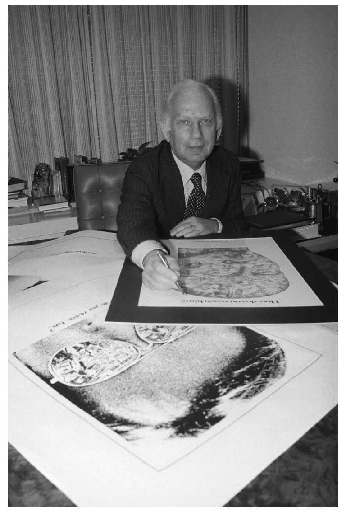
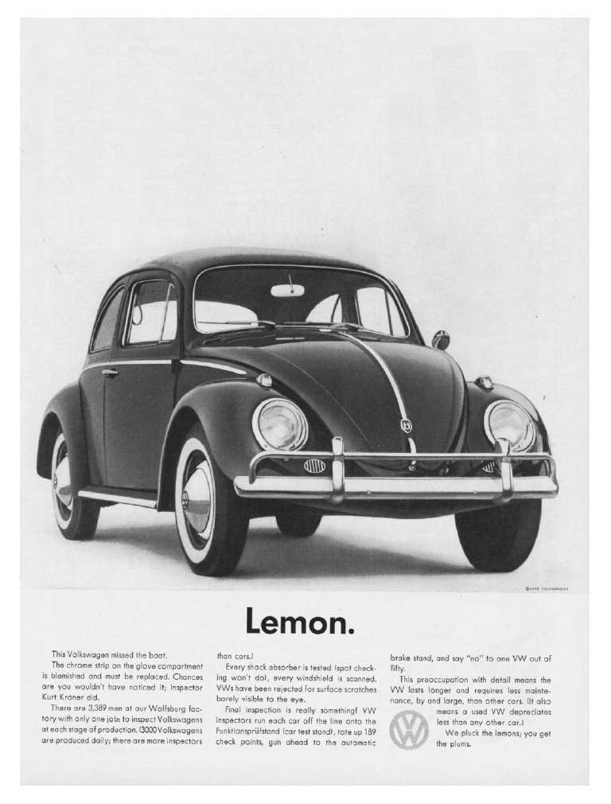
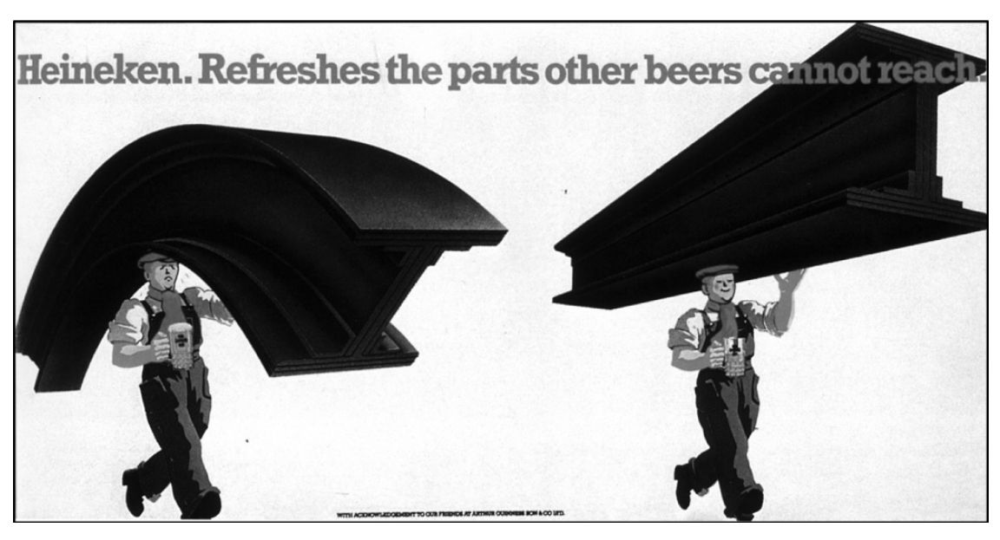

在第二章中我们已经看到，从20世纪末以来，广告代理机构变得日益专业化。在那之前，代理机构向客户提供多种不同类型的市场营销服务。从20世纪70年代开始，随着15%固定佣金制的瓦解，代理机构开始专注于提高两项核心能力：广告制作和媒体购买。这两项活动很快开始由不同的专业公司（创意代理和媒体代理）来分别执行。这一组织结构一直保留至今，因此我们将在本章和下一章中分别对这两个专业化机构进行论述，先从创意代理开始。
许多人认为，只要告诉创意人员“我们需要为博金斯啤酒发起一场新的广告宣传活动，赶紧行动起来”，广告就能凭空产生。在得到任务后，一位创意人员将冰袋放在自己的额头上，在漆黑的房间里坐上几个小时，直到灵感出现，于是兴奋地宣告：“我想到了！广告口号就是‘再没有比博金斯啤酒更好的啤酒了！’”
不过，真相并非如此。虽然枯坐和构思基本接近于广告创意过程中的关键部分，但剩下的场景却都是幻想。原因有三。首先，如之前所言，创意人员不可能在没有书面的、详尽的广告策略的情况下开始工作，并且这一广告策略必须得到客户（也就是博金斯啤酒公司）和代理机构高层管理人员的同意。其次，创意人员如今基本不会单干，他们总是两人合作，组成文案/艺术团队。再次，在初始阶段，文案/艺术团队总是有几个想法（通常称为“概念” ），在细化其中的一两个想法之前，会和同事先进行讨论（并且他们很少能在几个小时之内想出这些概念）。
本书一开始已经对此作了详尽介绍，广告策略文件的内容包括：广告宣传活动的目标；确证目标可行的品牌信息；该品牌的竞争对手，包括它们各自的广告和市场营销活动；对所有相关的市场调查所进行的总结（比如，为什么消费者使用该品牌，或者为什么不使用该品牌）；宣传活动必须传递的讯息，以及必须采取的语调；宣传活动中可能用到的媒体；广告制作和媒体宣传的可用预算；广告制作和媒体宣传的时间安排；其他重要的细节；还有最重要的是，宣传活动所针对的目标市场。
创意团队需要并且希望知道所有这些信息。他们需要知道将要使用的媒体，从而不会在需要电视广告的时候制作印刷广告。他们需要知道可用预算，从而不会制作无法负担的广告。他们需要知道宣传活动的准备时间有多久。他们需要知道宣传活动所针对的目标市场，从而做到心里有数，以免宣传活动针对富裕的老年人群而创意却迎合了囊中羞涩的少年人。但对他们来说，广告策略至关重要的部分是：宣传活动必须传递的讯息以及传递讯息时必须采用的语气。
广告创意人员必须学习却最难学到的是，你加入广告中的讯息只是为达到最终结果而采取的手段；这也是广告投放者必须学习的一课。广告行为的最终结果是目标市场对于讯息的理解。重要的不是你加入 广告中的讯息，而是目标市场从广告中得到 的讯息。许多缺乏经验的广告投放者和创意人员认为，如果你在广告中说了某些话，人们就会照着话的意思去理解。或许是这样，但或许不是。正如日常交谈中人们很容易误解别人说的话，他们对于广告中看到和听到的讯息，更容易产生误解。他们通常很少关注广告，只知道大概；他们经常关注广告中作为无关紧要的道具而出现的次要内容；他们常常忘记广告的大部分内容，只记得吸引他们的点滴片段。因此，重要的是不要在广告中塞入太多信息，这是许多广告投放者容易犯的错误。经常出现这样的情况，人们记得广告，但不记得广告宣传的品牌。因此，广告策略中所界定的“必须传递的讯息”，一定要简明扼要，一清二楚。创意团队所提出的任何想法都必须通过这条准则的考验。
但广告中的讯息所包括的却不仅仅是文字和图像。它还包括文字和图像的使用方式 ：广告的语气、风格和个性。同样的文字用不同的语气或通过不同的字体来表达，会传递完全不同的讯息。举一个简单例子：使用同样文字的两种派对邀请函，一种采用传统的浮雕铜版字体，印在毛边厚卡片上，另一种采用诡异的、吓人的字体，用血红色印在闪光的锡箔上；两种邀请函的效果完全不同。讯息文字是一样的：请参加我的派对。但各自的语气、风格和个性预示了完全不同的事件。结果，不同的邀请函将吸引完全不同的人群，不同的目标市场-并且将吓住其他人。广告也是如此。广告的每个细节，如演员、模型、字体、设计、道具等，都会对它的语气产生影响。广告的语气必须经过精心设计以便吸引目标市场，否则讯息的有效性必然受到影响。因此，广告创意人员必须对现有风格、现有流行样式、现有方言的细微差别极其敏感。显然，他们所选择的字体、设计，甚至包括模型和道具，都属于艺术指导而不是广告文案创作者（虽然两人对此都有发言权）的职责范围；而语言则属于广告文案创作者而不是艺术指导（虽然两人对此都有发言权）的职责范围。这就是为何广告创意人员现在总是两人一起组成工作团队的原因：他们可以一起进行文字和艺术创作。
但真实情况并非总是如此。在20世纪中期之前，在全世界范围内，新广告一般都由广告文案创作者来制作，他单独工作，就像上例中所提到的为博金斯啤酒服务的那位创意人员一样。广告文案创作者的确会经历一个类似于将冰袋放在额头上的艰苦构思过程，最后他想好了广告词，或许还有大体的广告图案。他（在那个年代几乎都是“他”）随后将文字和想法交给“视觉效果实现人员”，后者的职责是将文案创作者的想法进行视觉呈现。负责进行视觉呈现的人员在另外的部门工作，往往距离文案创作者较远。负责进行视觉呈现的人员可能是排版人员，有时也可能是图像设计师。但在等级排序中，文案创作者的地位最高。负责进行视觉呈现的人员实现了广告文案创作者的想法，但那个想法依旧属于文案创作者。这一切自有一定道理，因为平面广告在当时占据了广告业的最大份额，而平面广告主要依靠文字。文字才是最重要的。
随后电视出现了。电视本质上是视觉媒体，或者说是视觉/文字媒体。电视广告在美国出现于20世纪30年代，到了40年代，美国的广告代理开始质疑广告创意中的“单一文案创作者”模式。其中一家代理机构成为使用文案/艺术团队这一创意方式的先驱。这家代理机构位于纽约，名为多伊尔·丹·伯恩巴克公司。20世纪50年代，多伊尔·丹·伯恩巴克公司迅速打响自己的名头，成为美国乃至全世界最富创意的广告代理机构。它雇用了一些美国广告业最具天赋的创意人员。在它的创造力中，文案/艺术团队形式处于核心位置，因为这一做法极大地提升了“艺术”人员的地位，现在他们的头衔是“艺术指导”。负责进行视觉呈现的人员不再是仅仅对文案人员的想法进行阐释，文案/艺术团队从一开始就一起工作。
他们的团队也不是只为电视广告服务。很快人们就发现，文案/艺术团队提升了所有媒体的创造性。随着媒体数量和类型的增加，人才的组合变得更为重要。如今，几乎所有的广告宣传活动都适用于多种媒体，从电视到店内宣传，从海报到互联网。无论采用哪种媒体，文案创作人员和艺术指导都一起构思，通力协作，每人都贡献出自己的技能和才干。由此而创作出的广告变得更好。多伊尔·丹·伯恩巴克公司的早期广告宣传，如大众汽车、以色列航空、安飞士汽车租赁公司以及其他许多品牌的广告，很快就在全球范围内为人所知。一种新型的广告就此诞生，在这种广告中，广告概念将文字和视觉效果融合在一起。广告投放者纷纷奔向多伊尔·丹·伯恩巴克公司，它的业务发展势头如烈火燎原。
一方面由于商业电视直到1955年才在英国出现，另一方面也由于英国的广告公司老板不愿意采取一种新的创意体系，他们认为这样做过于危险激进，并且代价不菲，因为新兴的“艺术指导”要求的工资远远高于以前负责进行视觉呈现的人员，因此文案/艺术团队这一创意举措直到20世纪60年代初期才跨越大西洋，发展到英国。
最早在英国采取这一措施的公司是英国广告创意的行业龙头，一家名为科莱·狄金森·皮尔斯的代理机构。科莱·狄金森·皮尔斯公司与多伊尔·丹·伯恩巴克公司有着亲密的合作关系，因此对后者的创意“团队”体系知之甚详。和之前的多伊尔·丹·伯恩巴克公司一样，科莱·狄金森·皮尔斯公司因为其卓越的广告创意，迅速在世界范围内赢得美名。它为本森与海基思牌香烟、喜力啤酒、哈姆雷特牌雪茄以及许多其他产品所做的广告在全世界各种创意节庆活动上赢得了多项大奖。在20世纪60年代和70年代早期，这两家代理机构主宰了世界广告创意领域。

图11 比尔·伯恩巴克将多伊尔·丹·伯恩巴克公司纽约分部建设成为20世纪60年代世界上最富创意的广告代理机构

图12 多伊尔·丹·伯恩巴克公司制作的大众汽车广告因为它的创意，迅速在世界范围内为人所知
如今，在世界上每家顶尖的广告代理机构里，几乎所有的广告创意都由文案/艺术团队来完成。通常，广告文案创作者和艺术指导两人组成长期的合作关系，他们在更换工作时也是一起跳槽，从一家代理跳到另一家。显然，和其他所有的关系一样，他们偶尔也会分手，重新选择搭档。但这样的分裂非常罕见。创意人员发现，要找到一个能够合作愉快的搭档非常困难；一旦找到，他们会努力保持合作关系。
一个创意团队需要多久才能想出一个新的广告宣传的点子？要回答这一问题，不妨先想想一根线有多长？一个点子可能马上就能想到，也可能要酝酿几个星期。一个团队究竟是只想一个点子，还是想出好几个，然后进行进一步筛选？

图13 科莱·狄金森·皮尔斯公司的喜力广告获得国际性创意大奖
对此没有统一的答案。有时，团队想出一个点子，并确信它绝对有效。更多时候，团队想出几个点子，每个点子似乎都可以经过进一步酝酿和思考来进行完善。团队随后会请其他人一起来评价各个点子。团队会和其他同事进行讨论，此时广告企划（我们在第一章的末尾谈到了这一点）将重新参与创意过程。但在我们深入了解这一过程之前，需要（事实上很有必要）先研究一下创造性和创意人员的本质，因为广告行为很大程度上取决于这两个因素。
什么是创造性？相比我们之前所遇到的术语，创造性更加难以进行准确界定，虽然有许多人进行了尝试，你也可以在词典中查到许多定义。有时人们认为，尽管创造性无法界定，但它很容易辨识。这种说法就像许多其他关于创作性的说法一样，只对了一半。的确，创造性可以被辨识，但不同的人对于什么样的事物具有创意有着不同看法。我们都知道，许多人一开始拒绝承认“印象派”画作是艺术，而如今这些绘画已经被认为是艺术史上最伟大的部分作品了。音乐和文学领域同样如此。广告领域有时也会出现这种情况。
“创造”这一概念（“无”中生“有”，将新事物初次呈现于公众面前）在历史上一直吸引和困扰着人类。在整个历史长河中，人们普遍认为，创造性难以名状，它“完全是凭空产生”。有创意的点子自动闯入人们的脑海，这一过程无法预测，也无法解释。对这一过程的描述，最常见的漫画是大脑中的一盏电灯泡无缘无故突然发光。但对于创造性的这种看法实在过于简单。
首先，这种看法认为，有创意的点子可以无须经过之前的思考就自动出现。但很少有创意人员会否认，点子是长期思考的结果。当伊萨克·牛顿爵士看到苹果坠落时，他并不是一下子就发现了重力，虽然那则著名的逸事这样宣称。之前数年他一直在思考重力的本质。事实上，当被问到他如何取得科学发现时，牛顿的回答是“通过一直对这些问题进行思考”。是的，新的想法的确“毫无征兆”地闯入了具有高度创意的人员的脑海。但这些想法之所以出现，是因为创意人员一直在有意无意地追寻它们。
其次，电灯泡的形象暗示，有创意的点子完全是在头脑中形成的。但实际情况很少如此。阿尔伯特·爱因斯坦从16岁到26岁花费了至少十年时间来发展他的相对论。大多数创意需要对初始灵感进行发展和执行。巴勃罗·毕加索在画壁画杰作《格尔尼卡》时，一直在修正和更改画稿。罗伯特·韦斯伯格教授曾经对此多有著述，他将创造性界定为在本质上是渐进发展的 。这是一种很好的思考创造性的方式。文案/艺术团队体系还有一个额外的好处，那就是团队中的两个人相互挑战并逐步改进对方的想法。
这些因素对于广告创意来说至关重要。当接到广告策略时，创意人员开始考虑（或者说，认真思考）如何传递广告宣传的讯息，他们要采取一种能抓住和吸引目标市场的方式。他们要寻找一个相关的点子，既有创意，又能达到效果，还必须是广告业之前没有使用过的点子。通常很容易找到一些与宣传活动没有关系的、有创意的、原创的想法，但这些想法与他们的任务无关。相关的点子或许很快能想到，或许要等上很久。但随后这个点子需要进一步完善，逐步从各个方面进行完善。最初的想法几乎总是需要经过锻造、塑形和打磨，尤其是当广告宣传用于不同媒体的时候。这需要时间，但广告创意人员知道，时间有限。商业广告的筹备总有时间要求。如果下周四需要进行新的广告宣传，创意团队就需要在那之前准备完毕。这其中的压力其实非常巨大。很少有人意识到，随着时间流逝而新的宣传构思还没有成形，广告创意人员所承受的精神折磨。每过去一天就意味着准备时间少了一天。但十次里有九次，或者说一百次里有九十九次，他们最终顺利完成了任务。如果他们频繁失败，就没法再继续从事广告创意工作了。
广告创意人员恶名在外，他们给人的印象是自我中心、性情多变且脾气暴躁。如果你偶尔去逛伦敦、纽约或世界上其他广告中心里那些创意人员常去的酒吧，你完全可以预料，你将听到很多关于创意人员因为广告设想而发生争斗的故事，他们相互击打，将椅子扔出老远，将电脑键盘扔出窗外。几乎所有的故事都是杜撰出来的，但它们的确反映了那些创意人员在广告从业者眼中别有魅力的形象。
同样，如果你想对社会上那些创意人员的本性和行为进行讨论，不出几分钟就一定会有人提到文森特·梵高或保罗·高更，或者同时提到两者。为什么？不是因为他们很典型，他们一点都不典型。没有其他哪个艺术家像梵高一样割掉自己的耳朵，也很少有人像高更一样远离文明社会，躲到世界的某个荒凉角落和土著人住在一起。但是，梵高和高更体现了我们对于艺术家的浪漫想象：顽固任性的家伙，自我中心，经常出现精神问题。事实完全不是这样。绝大多数艺术家以及绝大多数广告创意人员都在辛苦工作，过着相对传统的生活。
不过，具有高度创意的那些人的确和我们其他人在某些方面有所差异。近年来，心理学家（最近也包括神经学家）对这些差异进行了许多研究。研究结果表明，创意人员的确更为内向，更自负，富有实验性，不遵循常规。但是，所有的研究都表明，创意人员和其他人的差异并不显著。如果你将各类人按照顺从程度排成序列，一头是最顺从的人，另一头是最不循常规的人，创意人员平均来说趋向于不循常规。只有少数人，如梵高和高更（包括爱因斯坦，他也很古怪）处于极端位置。正如弗吉尼亚理工学院的迈克尔·巴达维教授所说：
创意人员还有一个重要方面不同于其他人。创意人员极其看重他们的成果。他们希望并期盼他人能根据他们的成果而不是他们的个人行为来判断他们。心理学家安东尼·斯托尔博士对此说得很清楚：
这些因素对于广告创意人员有何影响？他们知道他们是谁，并且觉得他们与其他人不一样。他们时常在高度心理压力下工作。他们对自己的成果极为看重，这意味着他们很难接受批评。总体而言，这些因素往往使他们显得很自我，性情多变，并且容易发怒。这样的行为或许不尽合理，但却可以理解，并且如果有人要想和他们一起顺利合作，就必须理解这样的行为。
在20世纪70年代之前，代理机构中的创意人员都是由机构的高层管理人员通过他们的部门领导，即创意总监，来加以“管理”的。创意总监有时权力很大，但他们很少负责日常经营。这属于广告机构的所有人和创始人的职责范围。这些商人或许认同创造性的重要性，比如科莱·狄金森·皮尔斯公司的总管约翰·皮尔斯。更常见的情况是，这些商人将创意人员视为不好但又必不可少的人：创意人员很重要，但他们对自己的成果自视过高，因此养成了令人难以容忍的自我中心和反复无常的性格。这种观点从第一章所引用的约翰·霍布斯的话中可以得到反映。（对于广告创意人员所做的调查证实，他们中的大多数人都认为，是他们的成果养活了代理机构的其他人，而机构的高层管理人员却不理解这一基本事实。有一则古老的广告业笑话：“代理机构中的创意人员总是受到万千宠爱。当然，爱他们的正是他们本人。”）
由此不难想见，在广告代理机构的管理层和创意部门之间总是摩擦不断。在我加入广告业后不久，英国一家最成功的代理机构的主席公开声称，他的目标是“打破创意人员对于广告制作的束缚”。但随着电视广告的增长以及多伊尔·丹·伯恩巴克公司和科莱·狄金森·皮尔斯公司分别在美国和英国开展的创意革命，代理机构的许多权力从业务经理转到了顶尖创意人员手中。至少是两个部门平分秋色。20世纪60年代和70年代，许多代理机构，尤其是美国公司，都是由顶尖创意人员所组建的。这是一个新的现象。
显然，代理机构的管理层和刚刚获得自主权的创意部门之间的分歧必须得到化解，这也是设立广告企划的起因之一（参见第14页）。广告企划这一做法的巧妙之处在于新的广告企划人员具有双重（甚至三重）忠诚度。他们与创意人员亲密合作，并时常代表后者的利益；他们与客户助理亲密合作，并时常代表后者的利益（而且他们在代理机构内部与客户亲密合作，并时常代表后者的利益）。他们能够处理不同职位之间的明显冲突，因为他们首先与消费者和目标市场紧密合作，并且总是 代表着消费者和目标市场的观点和愿望。随着市场调查的发展，从20世纪70年代开始，广告业开始日渐重视消费者的意见。在广告代理机构内部，广告企划人员正处于这一变化的中心。他们亲自或借助专业调查公司的帮助，实施对新创意的测试。这使得他们具有了极大的影响力。在广告业没人敢完全无视消费者和目标市场的态度。让我们回到约翰·霍布斯说过的话，对消费者关于广告意见的调查之前就已经完成了。但却是以一种对抗性的方式来完成的。代理机构的管理层检验创意人员的想法，随后带着调查结果回到创意人员那里，并告诉他们如何修改。广告企划并不这样做：创意人员参与到整个过程之中。这是向前发展的关键一步。
但是，不能认为广告企划一下子就能消除创意人员和管理层之间所有的分歧和摩擦。并非所有的广告企划人员都是出色的外交家，也不是所有的创意人员都能接受批评，即使是通过委婉的方式来表达。近期在世界范围内对创意人员的调查表明，许多人依旧质疑市场调查对他们创造性的影响。他们担心，公众拒绝那些真正具有创意的概念（比如，还是印象派的例子），因此，他们认为有必要在开展公众市场调查时保持警惕，不要盲目相信数据。这是对的。但所有的创意人员都承认，广告企划能帮助他们改善成果，至少能逐步改进。
如果本书写作时创意代理和媒体代理尚未分家，并且广告企划还没出现，那么本章的开头部分毫无疑问应该先讨论客户经理：他们负责在客户和代理机构之间进行联络。
不同的代理机构对于那些负责与客户保持日常联系的人有不同称呼：客户经理、客户执行、客户主管等等。在代理机构的行政体系中，在他们之上的是客户总监、客户服务总监，或者干脆就是董事会负责人。在美国则经常使用总裁或副总裁的头衔。不管使用哪种称呼，工作职责并没有改变。客户经理在客户面前代表代理机构，同时又在代理机构内代表客户。在相对较低的层次，他们处理并推进代理机构为客户提供的日常业务。在较高层次，他们的角色更具有战略意义。客户总监要确保客户对代理机构提供的服务感到满意（最好不光是满意），并且代理机构的计划和宣传活动都朝着正确的战略方向迈进。
此外，在早些时候，代理机构要提供多种服务，这意味着客户经理要和客户就多种市场营销服务进行协作，并且要监管所有这些业务。这意味着客户经理与客户的市场营销人员有着非常紧密的合作关系，全方位熟悉他们本人及其各自的业务。对于客户的业务，在代理机构中没有人比客户经理了解得更多。因此，好的客户经理权力很大。他们是代理机构的核心。他们能够，并且的确常常在他们跳槽的时候把客户带走。
如今，情况不太一样了。的确，客户经理依旧很重要。他们依然负责监管和协调代理机构为客户所提供的所有服务。但是代理机构的服务内容较为特定。代理机构发起新的广告宣传活动，执行与宣传有关的广告企划，并且与客户的媒体代理进行联络。这些活动都需要客户经理的精心安排。但广告企划人员也与客户保持亲密关系。创意人员同样如此。因此，相比他们，客户经理对于人员的控制力要弱得多。而且，客户与一大批不同的市场营销公司合作，他们与每家公司的人际关系都没有以前和一家提供多方面全能服务的代理机构来得密切。现在依然有强势的客户经理在跳槽时带走客户，但在大型代理机构里这种情况很少发生。因为除了上述提及的因素之外，大多数主要客户现在都在跨国经营。
显然，广告行为无法避免世界贸易全球化所带来的影响。事实上广告受到的影响很大。大多数跨国公司同时也是全球性广告投放者。从20世纪30年代开始，生产化妆品、香水和时尚产品的国际性公司已经开始进行全球性广告宣传，大多数广告刊登在顶级时尚杂志上。但是直到20世纪末，大众消费品公司才真正开始进行全球性广告宣传。即使现在，依然只有极少数广告宣传真正算是全球性宣传活动。大多数只能算跨国性宣传活动，也就是说，它们在多个国家进行，但在其他国家，当地法律、习俗以及竞争者迫使这些广告作出改变，无法保持全球统一的模式。
在一个缩小的世界里，全球性（或者说跨国性）广告行为的商业利益毋庸置疑。对广告宣传进行中心控制变得更为简单。在世界各地旅行的人们发现到处都是同样的广告宣传，而不是各个国家分别进行不同的宣传活动。随着各国的民族文化变得更为同质化，在一个国家取得成功的宣传活动通常也会在其他国家取得成功。将此类知识从一个国家传递到另一个国家正是跨国公司的主要商业优势之一。全球化意味着创意成本可以分期清偿，虽然从分期清偿中节省的资金通常远比全球性广告投放的新手所预想的要少得多。
不过，虽然利益很明确，其中的机制却很复杂。整个世界并不是像全球化的拥护者所声称的那样趋于一致。当你从一个国家到另一个国家，几乎一切都发生了改变：地貌、建筑、语言、法律、传统、人们的相貌和服饰，通常还有产品及其包装。广告可以被用来回避这些差异，并且事实上就是被用来这样做了，但许多广告因此变得平淡无奇。因此，要想进行真正有效的跨国宣传活动，就需要在各国间进行大量讨论和协商。
不管全球性广告投放者的宣传活动是否在全世界保持一致，它们通常在世界范围内使用同一家创意代理。即使在不同国家必须使用不同广告，对于客户来说，选用能在任何地方对广告行为进行协调的同一家代理依然有许多好处。因此，所有的大型代理机构都调整自身架构，以适应国际客户的需求。它们指派全球客户服务总监（不管这一头衔的确切名称是什么），负责代理机构在全世界范围内为客户提供服务的方式。全球客户服务总监住在飞机上（还有豪华宾馆里），拥有巨大权力，类似于传统的全能代理机构中客户经理所拥有的权力。在代理机构中，没有人对于客户及其国际性业务的了解胜过全球客户服务总监。一家全球性客户在世界范围内的营业额和利润可能远远超过几个小国家中所有地方性代理机构的营业额和利润的总额。
为了应对全球性客户的需求，代理机构发展出了高度复杂的矩阵管理制度。地方客户经理和国际客户经理之间的服务和赢利职责相互交织又相互重叠。这是一套复杂的新游戏，需要紧密的团队合作。但代理机构迅速掌握了这一套方法：他们不得不掌握。
本章大多数内容都关注普通的（而非专业性的）创意代理。这是因为规模稍大的创意代理，无论是地方性还是国际性的代理机构，都从事普通代理业务。也就是说，它们为来自制造业和服务业的客户提供广告服务。它们也愿意这样做，首先，因为客户很少允许代理机构为它们的竞争对手服务。一家代理只能为一家汽车生产商、一家宠物食品生产商、一家化妆品生产商等等服务。因此，如果一家代理要想发展业务，就不能专业服务于单一的市场。其次，大多数代理机构的从业人员喜欢为不同行业的客户服务。他们觉得这样做具有激励性，并且他们可以将在一个行业中学到的知识转移到其他行业中。（这也是广告投放者通常无法在公司内部组建自己的代理机构的关键原因之一，虽然很多公司的确进行过这样的尝试。）
然而，有少数专业性代理机构专门为某些商业活动提供服务。专业性代理机构的广告业务范围包括：电影、戏剧、招聘、直接优惠券（即撕即用）、制药企业以及技术类财经服务。在这些领域，客户很少介意广告代理机构同时也为其竞争对手服务。它们更关心代理机构是否了解它们的特定商业需求以及相关的法律规定，而普通代理机构很难做到这些。
此外，本书第29页已经提到，近年来涌现出了一批专业从事互联网和其他数字化广告活动的创意代理。这些代理机构通常在涉及客户的竞争对手时受到和普通代理机构一样的限制，但是它们的客户在阐释限制要求时更为宽松，因为数字代理行业的规模相对较小，所涉及的技术又相对稀缺。人们普遍认为，进行数字广告宣传所涉及的创意技术不同于，但又近似于其他媒体所涉及的技术。2009年，在权威性的《国际广告行为期刊》上刊登的一篇文章列举了数字广告的六项原则：
1）广告投放者必须敏锐地察觉客户对隐私的关注。
2）消费者更有可能接受由他们信任的广告投放者所发布的数字广告。
3）消费者更有可能对那些与他们相关的产品的数字广告作出回应。
4）包含交互性的数字广告方式更有可能产生效果。
5）在数字环境里，有趣的广告讯息更有可能成功。
6）长期来看，数字讯息需要建设有效品牌。
这几条原则中，有几条（第2条、第3条、第6条，一定程度上还包括第5条）适用于所有媒体。其他几条原则很显然只适用于数字广告行为。正是这种重合使得现在的发展趋势还不明朗，无法判断从长期来看数字代理究竟是会被并入普通代理，还是继续保持专业性质。这一问题目前依然不够明朗。
现在创意代理已经将广告制作完成。接下去我们将继续探讨，媒体代理究竟如何购买广告发布时所需的空间和时间。